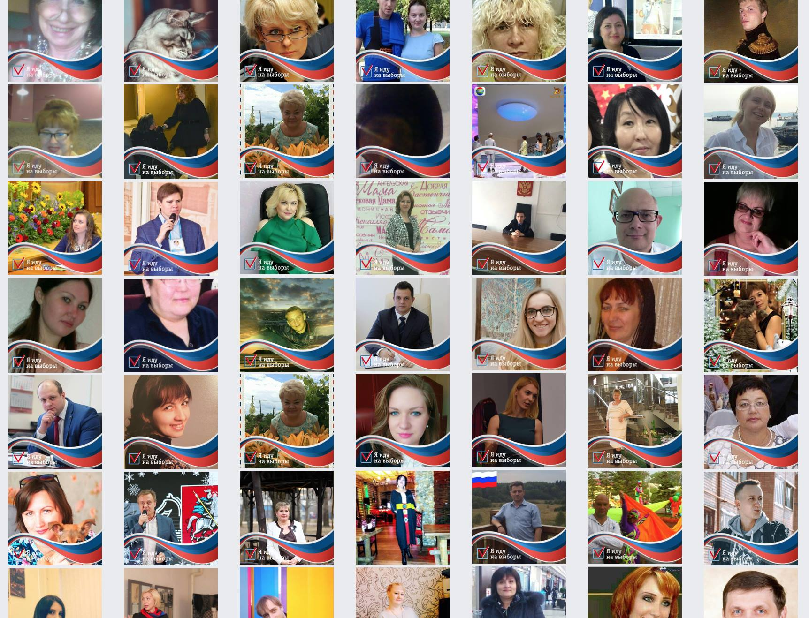

14 февраля я решил провести эксперимент и сделал рамочку для фейсбука «Я иду на выборы», установив её только себе. Больше ничего не делал вообще.

За месяц (а в основном за последние две недели) рамочку установили 22700 человек.
Мой пост про рамочку пошарили в группе «Мы за Владимира Владимировича Путина!». Думаю, это помогло продвижению. Ну и, может быть, рамочку продвигал сам фейсбук. Никакой статистики он не даёт, кроме вот этой цифры.
Из-за рамочки на меня подписалось около 200 человек, что, вероятно, можно занести в плюс. Несколько, думаю, отписалось. Из-за своей кастрюли на голове посчитав, что действие политично. Хотя это был скорее технический эксперимент. Отписавшихся тоже можно записать в плюс. Взбудоражил чёрно-белые умы и тот факт, что сам я не собирался идти на выборы.
В комментарии пришёл один сумасшедший и пара сочувствующих.
В личные сообщения несколько человек писало с просьбой помочь установить рамочку.
В целом, эксперимент любопытный, поздравляю всех с окончанием предвыборной истерии. Работаем.